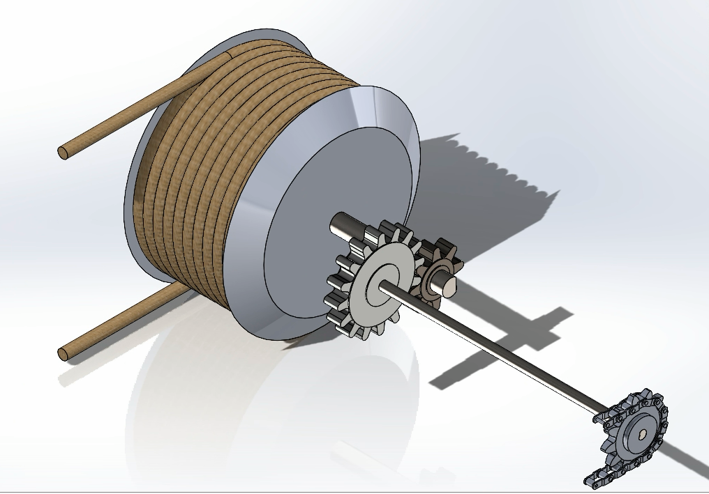

Boston Blue Line Extension
As part of my senior capstone project, I worked with a team of four engineering students to develop a conceptual design for an extension of Boston’s Blue Line. Our scope included the initial segment of the alignment, with emphasis on station excavation planning and water retention design. The SolidWorks model below represents the proposed station geometry, designed to accommodate two full train lengths and demonstrate the overall site scale.

Gutterson Parking Garage: Structural Analysis
For my final project in a Structural Analysis Course, my teammate and I performed a complete structural load analysis of the Gutterson Parking Garage at UVM. The study included live, dead, snow, and seismic loads typical for Burlington, Vermont. We analyzed the structural response of each floor slab, girder, and interior column to ensure compliance with design standards. The structure is shown below.

Work Hard Play Hard Rollercoaster
For this project, I designed a human-powered roller coaster where riders contribute to lifting the cart by pulling ropes. The system converts the horizontal pulling motion into vertical motion using a series of gears and shafts, giving riders mechanical advantage while also powering the ascent. I focused on designing the gear ratios, shaft sizes, and overall mechanical efficiency to ensure smooth operation and safety. This project allowed me to apply principles from both mechanical and civil engineering in a hands-on, creative way, combining physics, mechanics, and structural considerations into a single functional ride.
Mechanics of a Golf Swing: Finite Element Analysis
As part of my Computational Solids Engineering course, I developed a finite element model in ABAQUS to simulate a golf swing. The study quantified the forces transferred from the club to the ball at multiple swing velocities. Below are still frames of the collision, accompanied by a video of the 80 mph impact simulation.

3D Rendering
I discovered a new passion for engineering while learning 3D modeling in school. I found the process not only engaging but genuinely fun, and I quickly started exploring 3D modeling in my free time. One of my more ambitious “projects” was something I dubbed Stadium Couch, a tiered seating system for our college living room. To convince my roommates that this was feasible, I created a comprehensive 3D model of our existing space, including accurate furniture dimensions and textures for color and aesthetics. I then designed the theoretical stand to support a third couch, primarily for spacing in the inital rendering. While the stadium couch was never actually built (our living room already had plenty of seating, and we didn’t want to spend money on materials), the project gave me hands-on experience combining creativity, spatial reasoning, and modeling skills in a playful, real-world context.
Woodworking
Another hobby I picked up during college was woodworking. I found my way into engineering because of the strong desire I have always had to create things. Woodworking has given me a new medium to express this creativity, and I’ve enjoyed learning the skills needed to bring my ideas to life. Pictured below are a few of my favorite projects, including a custom desk extension I built to have more workspace while studying, and a bar table I designed and built for my living room. The bar was so impressive that we used it most nights, and we were even able to sell it to the next tenants for a profit.